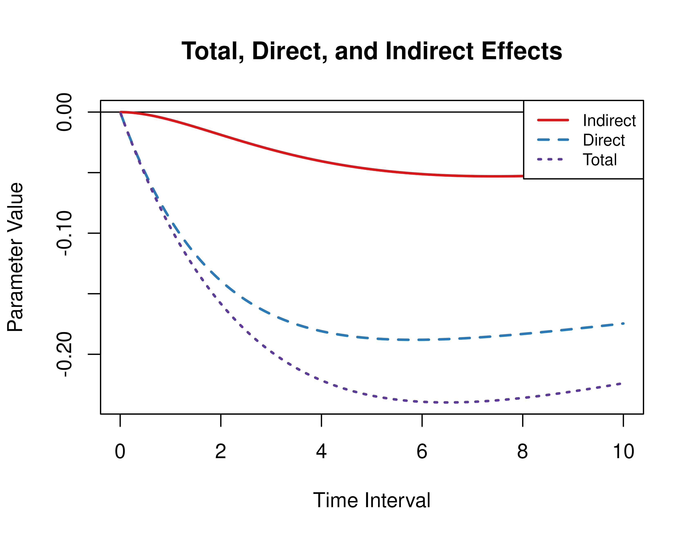

Illustrative Example 1 - Direct, Indirect, and Total Effects
Ivan Jacob Agaloos Pesigan
Source:vignettes/fig-example-1.Rmd
fig-example-1.RmdThis vignette accompanies Illustrative Example 1. The goal of the
example is to calculate the direct, indirect, and total effects from the
continuous-time vector autoregressive model drift matrix
for a range of time intervals. This example features the
Med and MedStd functions from the
cTMed package.
NOTE: The code to fit the continous-time vector autoregressive model in
dynris provided at the end of this vignette.
Summary of CT-VAR Estimates
The object fit contains the fitted dynr
model for the data set with a sample size of 1000. See the script used
to fit the CT-VAR model below.
summary(fit)
#> Coefficients:
#> Estimate Std. Error t value ci.lower ci.upper Pr(>|t|)
#> phi_11 -0.033462 0.008196 -4.083 -0.049525 -0.017399 2e-05 ***
#> phi_12 0.037927 0.013550 2.799 0.011369 0.064484 0.00256 **
#> phi_13 -0.013249 0.012176 -1.088 -0.037113 0.010615 0.13827
#> phi_21 -0.151606 0.022211 -6.826 -0.195140 -0.108073 < 2e-16 ***
#> phi_22 -0.585371 0.063543 -9.212 -0.709914 -0.460829 < 2e-16 ***
#> phi_23 0.227932 0.041150 5.539 0.147281 0.308584 < 2e-16 ***
#> phi_31 -0.100379 0.020598 -4.873 -0.140751 -0.060008 < 2e-16 ***
#> phi_32 0.103790 0.038758 2.678 0.027825 0.179755 0.00371 **
#> phi_33 -0.511091 0.052376 -9.758 -0.613747 -0.408436 < 2e-16 ***
#> sigma_11 0.057973 0.008438 6.870 0.041435 0.074511 < 2e-16 ***
#> sigma_12 -0.008698 0.010937 -0.795 -0.030133 0.012738 0.21324
#> sigma_13 0.010256 0.010438 0.983 -0.010203 0.030715 0.16293
#> sigma_22 0.741690 0.113207 6.552 0.519807 0.963572 < 2e-16 ***
#> sigma_23 0.101494 0.029935 3.391 0.042824 0.160165 0.00035 ***
#> sigma_33 0.838004 0.104520 8.018 0.633147 1.042860 < 2e-16 ***
#> theta_11 0.105586 0.006156 17.152 0.093521 0.117652 < 2e-16 ***
#> theta_22 0.175885 0.035516 4.952 0.106274 0.245495 < 2e-16 ***
#> theta_33 0.082161 0.032843 2.502 0.017790 0.146532 0.00618 **
#> ---
#> Signif. codes: 0 '***' 0.001 '**' 0.01 '*' 0.05 '.' 0.1 ' ' 1
#>
#> -2 log-likelihood value at convergence = 26917.91
#> AIC = 26953.91
#> BIC = 27104.06Extract Elements of the Drift Matrix and the Process Noise Covariance Matrix
We extract the elements of the drift matrix and the process noise
covariance matrix from the fit object.
Direct, Indirect, and Total Effects of a Time Interval of One
Using the Med function from the cTMed
package, the direct, indirect, and total effects for a time interval of
one are given below.
Med(
phi = phi,
from = "conflict",
to = "competence",
med = "knowledge",
delta_t = 1
)
#>
#> Total, Direct, and Indirect Effects
#>
#> interval total direct indirect
#> [1,] 1 -0.0828 -0.0772 -0.0056Direct, Indirect, and Total Effects of a Time Interval of Zero to Ten
Using the Med function from the cTMed
package, the direct, indirect, and total effects for a range of time
interval values from 0 to 10 are plotted below.
Standardized Direct, Indirect, and Total Effects of a Time Interval of One
Using the MedStd function from the cTMed
package, the standardized direct, indirect, and total effects for a time
interval of one are given below.
MedStd(
phi = phi,
sigma = sigma,
from = "conflict",
to = "competence",
med = "knowledge",
delta_t = 1
)
#>
#> Total, Direct, and Indirect Effects
#>
#> interval total direct indirect
#> [1,] 1 -0.0954 -0.0889 -0.0065Standardized Direct, Indirect, and Total Effects of a Time Interval of Zero to Ten
Using the Med function from the cTMed
package, the standardized direct, indirect, and total effects for a
range of time interval values from 0 to 10 are plotted below.
med_std <- MedStd(
phi = phi,
sigma = sigma,
from = "conflict",
to = "competence",
med = "knowledge",
delta_t = seq(from = 0, to = 10, length.out = 1000)
)
plot(med_std)
Code to fit the CT-VAR model.
varnames <- c(
"conflict",
"knowledge",
"competence"
)
data <- dynUtils::InsertNA(
data = data,
id = "id",
time = "time",
observed = varnames,
delta_t = 0.10,
ncores = parallel::detectCores()
)
n_manifest <- 3
n_latent <- 3
# starting values
phi_11 <- 0
phi_12 <- 0
phi_13 <- 0
phi_21 <- 0
phi_22 <- 0
phi_23 <- 0
phi_31 <- 0
phi_32 <- 0
phi_33 <- 0
sigma_11 <- .10
sigma_12 <- 0
sigma_13 <- 0
sigma_22 <- .10
sigma_23 <- 0
sigma_33 <- .10
theta_11 <- .10
theta_22 <- .10
theta_33 <- .10
sigma <- matrix(
data = c(
sigma_11, sigma_12, sigma_13,
sigma_12, sigma_22, sigma_23,
sigma_13, sigma_23, sigma_33
),
nrow = n_latent
)
theta <- diag(
c(
theta_11,
theta_22,
theta_33
),
nrow = n_latent
)
library(dynr)
dynr_data <- dynr::dynr.data(
dataframe = data,
id = "id",
time = "time",
observed = varnames
)
data_0 <- data[which(data[, "time"] == 0), ]
dynr_initial <- dynr::prep.initial(
values.inistate = colMeans(data_0)[varnames],
params.inistate = rep(x = "fixed", times = n_latent),
values.inicov = cov(data_0)[varnames, varnames],
params.inicov = matrix(
data = "fixed",
nrow = n_latent,
ncol = n_latent
)
)
dynr_measurement <- dynr::prep.measurement(
values.load = diag(n_manifest),
params.load = matrix(
data = "fixed",
nrow = n_manifest,
ncol = n_manifest
),
state.names = paste0(
"eta_",
varnames
),
obs.names = varnames
)
dynr_dynamics <- dynr::prep.formulaDynamics(
formula = list(
eta_conflict ~ (phi_11 * eta_conflict) + (phi_12 * eta_knowledge) + (phi_13 * eta_competence),
eta_knowledge ~ (phi_21 * eta_conflict) + (phi_22 * eta_knowledge) + (phi_23 * eta_competence),
eta_competence ~ (phi_31 * eta_conflict) + (phi_32 * eta_knowledge) + (phi_33 * eta_competence)
),
startval = c(
phi_11 = phi_11,
phi_12 = phi_12,
phi_13 = phi_13,
phi_21 = phi_21,
phi_22 = phi_22,
phi_23 = phi_23,
phi_31 = phi_31,
phi_32 = phi_32,
phi_33 = phi_33
),
isContinuousTime = TRUE
)
dynr_noise <- dynr::prep.noise(
values.latent = sigma,
params.latent = matrix(
data = c(
"sigma_11", "sigma_12", "sigma_13",
"sigma_12", "sigma_22", "sigma_23",
"sigma_13", "sigma_23", "sigma_33"
),
nrow = n_latent
),
values.observed = theta,
params.observed = matrix(
data = c(
"theta_11", "fixed", "fixed",
"fixed", "theta_22", "fixed",
"fixed", "fixed", "theta_33"
),
nrow = n_manifest,
ncol = n_manifest
)
)
model <- dynr::dynr.model(
data = dynr_data,
initial = dynr_initial,
measurement = dynr_measurement,
dynamics = dynr_dynamics,
noise = dynr_noise,
outfile = file.path(
tempdir(),
paste0(
"example-ct-dynr-",
n,
".c"
)
)
)
model@options$maxeval <- 100000
lb <- ub <- rep(NA, times = length(model$xstart))
names(ub) <- names(lb) <- names(model$xstart)
lb[
c(
"phi_11",
"phi_21",
"phi_31",
"phi_12",
"phi_22",
"phi_32",
"phi_13",
"phi_23",
"phi_33"
)
] <- -10
ub[
c(
"phi_11",
"phi_21",
"phi_31",
"phi_12",
"phi_22",
"phi_32",
"phi_13",
"phi_23",
"phi_33"
)
] <- 10
ub[
c(
"phi_11",
"phi_22",
"phi_33"
)
] <- 0
lb[
c(
"sigma_11",
"sigma_22",
"sigma_33"
)
] <- .Machine$double.xmin
lb[
c(
"theta_11",
"theta_22",
"theta_33"
)
] <- .Machine$double.xmin
model$lb <- lb
model$ub <- ub
fit <- dynr::dynr.cook(
model,
verbose = FALSE
)
coef(model) <- coef(fit)
fit <- dynr::dynr.cook(
model,
verbose = FALSE
)